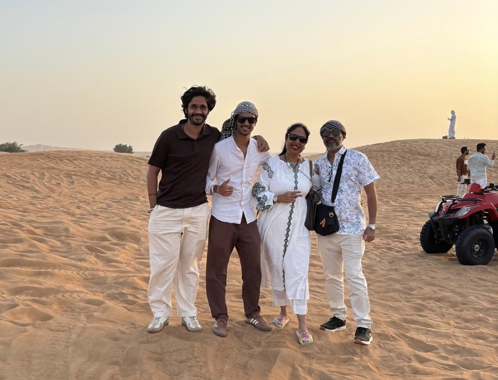

I'm currently building at the intersection of marketing, data, and film. Numbers tell me where a brand is losing revenue.
Story is what makes people care enough to fix it, and I've spent my early career trying to hold both at once.

It started with Music and Drawing, piano and percussion as a kid, sketching that turned into my first commissioned illustration work in grade 9.
These days it's split between strength training, reading, watches, cars, and shooting & editing content on a Sony ZV-E10, cut in DaVinci Resolve.
Family's been a big part of getting here, even from the background. I have a really cool mentor and elder brother,
Krishi — he is my business partner and cool brother who is the main reason for what i am today.
My Mum, she has background in microbiology aka 'Hitler' i can say (internal jokes) — don't ask me the reason
My Dad, has a consultancy firm majorly working as accountant with good network in hospitlity industry
Growing up in a home that backed the leap I'm taking now is a big part of why I'm able to take it.
Right now, the goal is proof before scale — grow Reimagine Studio into a trusted name in D2C revenue optimization, then bootstrap and prove a consumer brand of my own using that exact same framework. No shortcuts. Everything I'm learning right now, across data, marketing, and storytelling, is groundwork for the next ten years.
Running my own VC firm — funding consumer brands and investing in businesses, while still building and operating one of my own alongside it.
In ten years, I want Reimagine Studio to be an established name in D2C revenue optimization, my own consumer brand built and proven, and a venture fund of my own — writing checks into consumer brands and founders I believe in.
Finishing my Data Science degree at MIT Academy of Engineering while running Reimagine Studio day to day.
Bootstrap and prove a consumer brand using the Revenue Flow Architecture framework — documented in real time.
Grow Reimagine Studio and the consumer brand together, and build a public track record worth investing behind.
Launch and operate my own venture fund — investing in consumer brands while still building one of my own.
There is nothing guaranteed in life, the only guarantee is I take actions now, bet on myself, and take that leap.— Rishi Patel